Publications
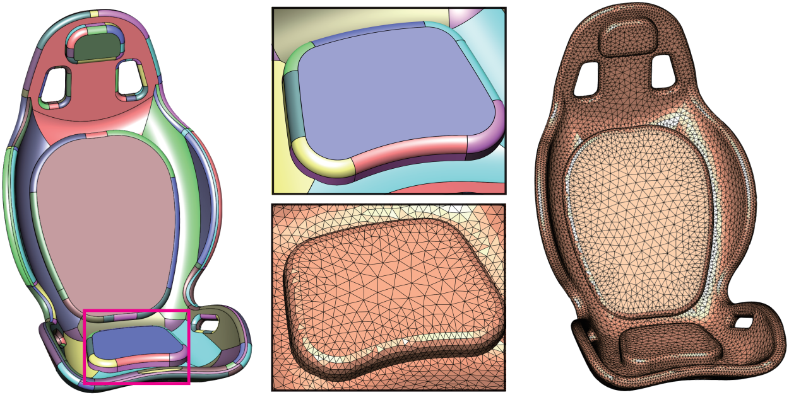
Automatic and high-quality surface mesh generation for CAD models
Jianwei Guo, Fan Ding, Xiaohong Jia, Dong-Ming Yan
Computer-Aided Design, Volume 109, Pages 49-59, 2019.
[pdf]
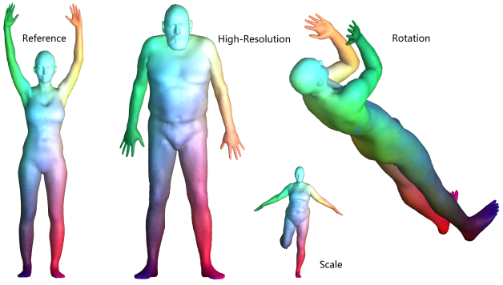
A Robust Local Spectral Descriptor for Matching Non-Rigid Shapes with Incompatible Shape Structures
Yiqun Wang, Jianwei Guo, Dong-Ming Yan, Kai Wang, Xiaopeng Zhang
IEEE Conference on Computer Vision and Pattern Recognition (CVPR), 2019.
[pdf]
[code&&data]
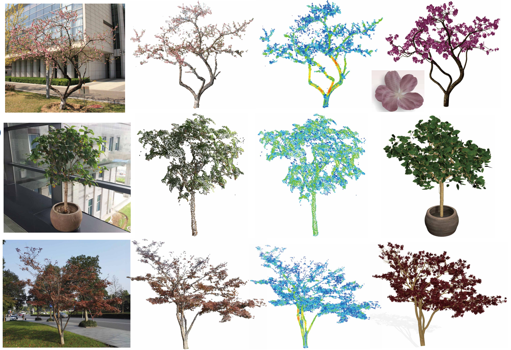
Realistic Procedural Plant Modeling from Multiple View Images
Jianwei Guo, Shibiao Xu, Dong-Ming Yan, Zhanglin Cheng, Marc Jaeger, Xiaopeng Zhang
IEEE Transactions on Visualization & Computer Graphics, 2018.
[pdf]
[Video]
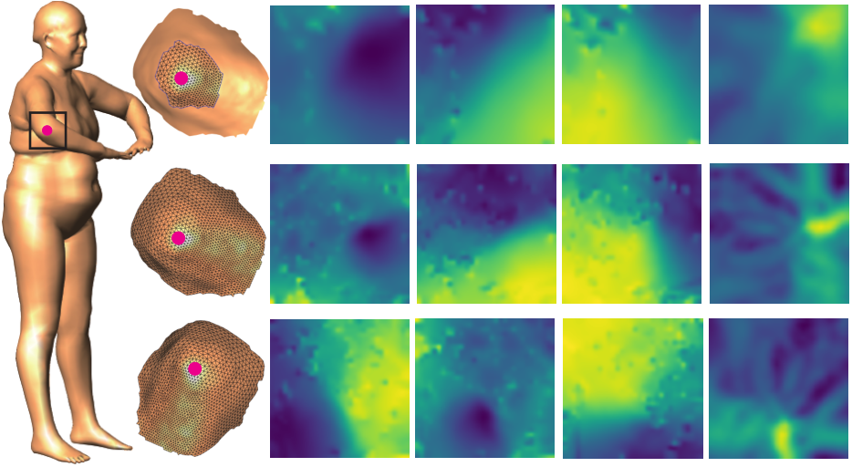
Learning 3D Keypoint Descriptors for Non-Rigid Shape Matching
Hanyu Wang*, Jianwei Guo*, Dong-Ming Yan, Weize Quan, Xiaopeng Zhang
The European Conference on Computer Vision (ECCV), pp.3-19, 2018. (* Joint first authors)
[pdf]
[code]
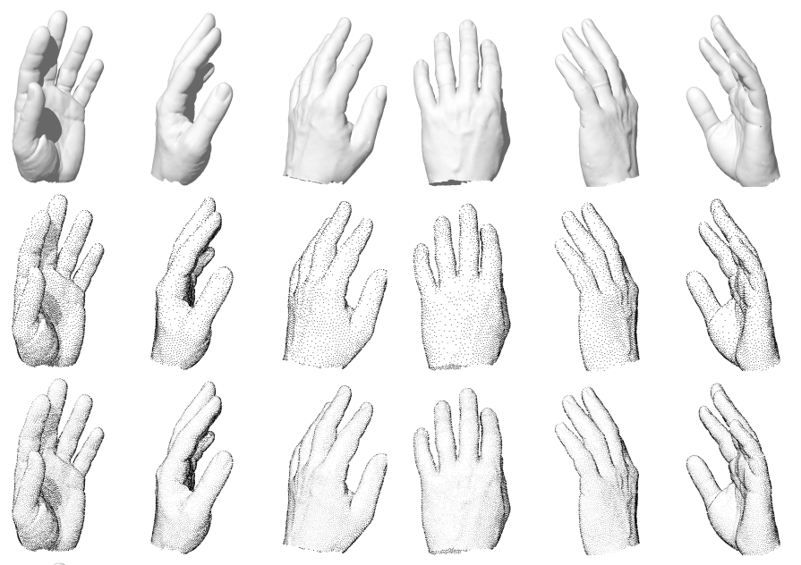
Instant Stippling on 3D Scenes
Lei Ma, Jianwei Guo, Dong-Ming Yan, Hanqiu Sun, Yanyun Chen
Computer Graphics Forum (Proceedings of Pacific Graphics), 2018.
[pdf]
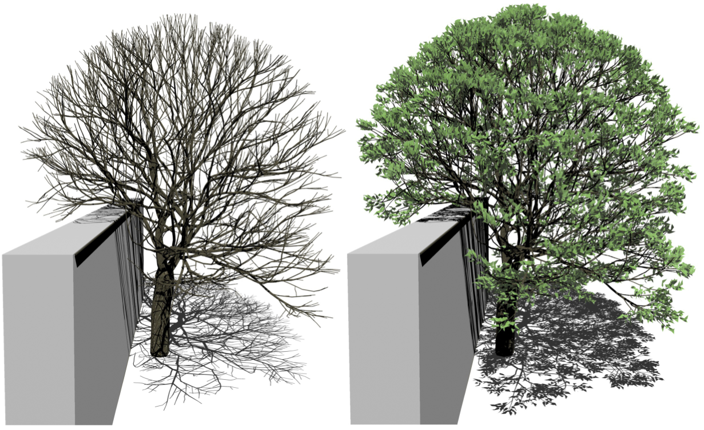
Tree Growth Modeling Constrained by Growth Equations
Lei Yi, Hongjun Li, Jianwei Guo, Oliver Deussen, Xiaopeng Zhang
Computer Graphics Forum, 37(1):239-253, 2018.
[pdf]
[code]
[video]
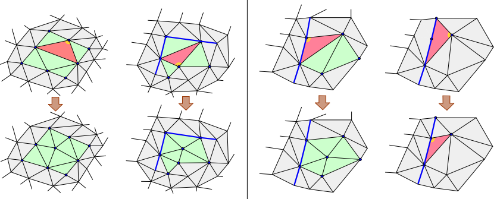
Isotropic Surface Remeshing without Large and Small Angles
Yiqaun Wang, Dong-Ming Yan, Xiaohan Liu, Chengcheng Tang, Jianwei Guo, Xiaopeng Zhang, Peter Wonka
IEEE Transactions on Visualization & Computer Graphics, 2018.
[pdf]
[Website]
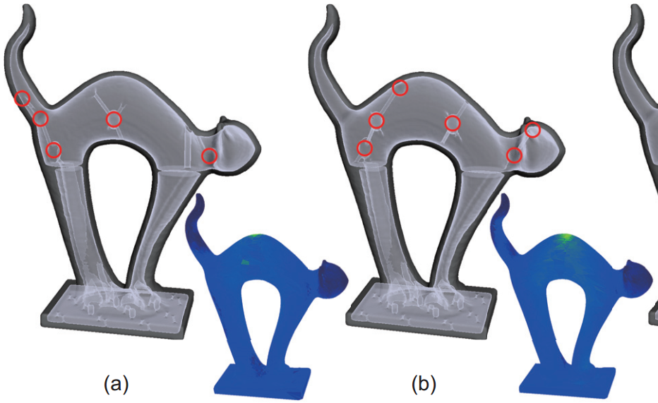
Generating hybrid interior structure for 3D printing
Yuxin Mao, Lifang Wu, Dong-Ming Yan, Jianwei Guo, Chang Wen Chen, Baoquan Chen
Computer Aided Geometric Design, 62:63-72, 2018.
[pdf]
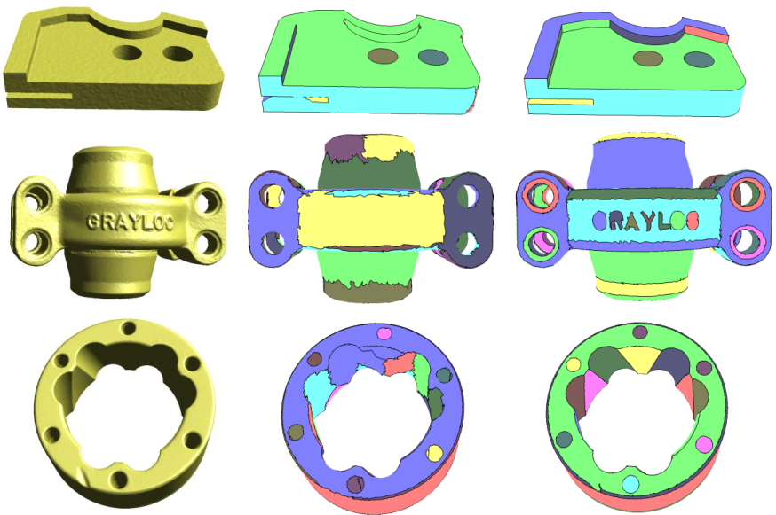
Interactive Segmentation of Scanned Mechanical Models Based on Quadratic Surfaces Fitting
Zhongqi Wu, Jianwei Guo, Jun Xiao, Xiangyong Zeng, Ying Wang, Dong-Ming Yan
ChinaGraph, 2018. Best Paper Award.
[pdf]
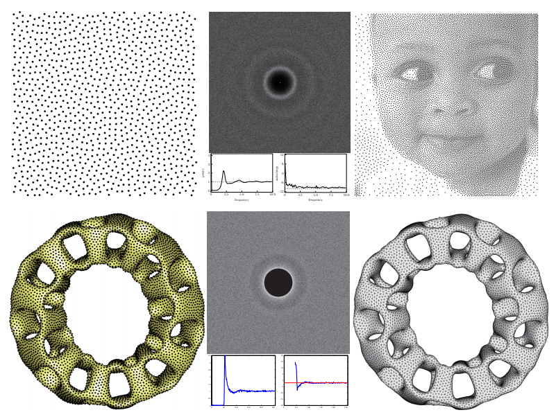
A Simple Push-Pull Algorithm for Blue-Noise Sampling
Abdalla G. M. Ahmed*, Jianwei Guo*, Dong-Ming Yan, J.-Y. Franceschi, Xiaopeng Zhang, Oliver Deussen
IEEE Transactions on Visualization & Computer Graphics, 23(12), 2496-2508, 2017. (* Joint first authors)
[pdf]
[suppl]
[code]
[data]
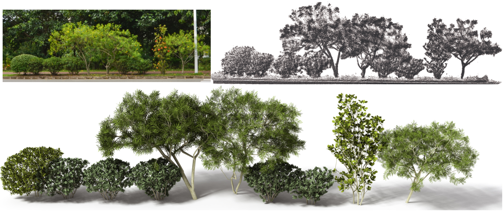
Realistic Procedural Plant Modeling Guided by 3D Point Cloud
Jianwei Guo, Zhanglin Cheng, Shibiao Xu, Xiaopeng Zhang
Siggraph Poster, 2017.
[pdf]
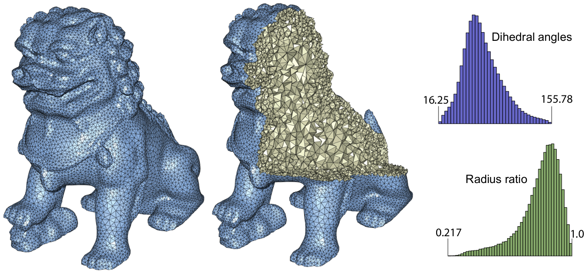
Tetrahedral Meshing via Maximal Poisson-disk Sampling
Jianwei Guo, Dong-ming Yan, Li Chen, Xiaopeng Zhang, Oliver Deussen, Peter Wonka
Computer Aided Geometric Design (Proceedings of GMP), 43, 186-199, 2016.
[pdf],
[suppl]
 Low-Discrepancy Blue Noise Sampling
Low-Discrepancy Blue Noise Sampling
Abdalla G. M. Ahmed, Hélène Perrier, David Coeurjolly, Victor Ostromoukhov, Jianwei Guo, Dong-Ming Yan, Hui Huang and Oliver Deussen
ACM Transactions on Graphics (Proceedings of SIGGRAPH Asia 2016).
[pdf]
[code&demo]
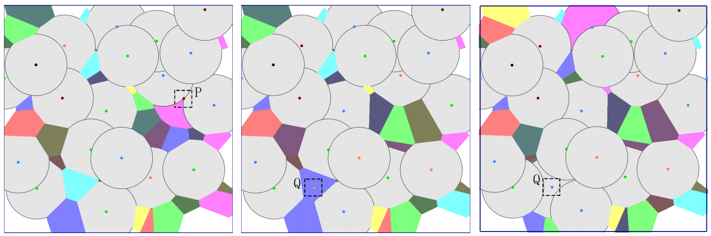
Maximal Poisson-disk sampling by sampling radius optimization
Weize Quan, Dong-Ming Yan, Jianwei Guo, Weiliang Meng, Xiaopeng Zhang
Siggraph Asia Poster, 2016.
[pdf]
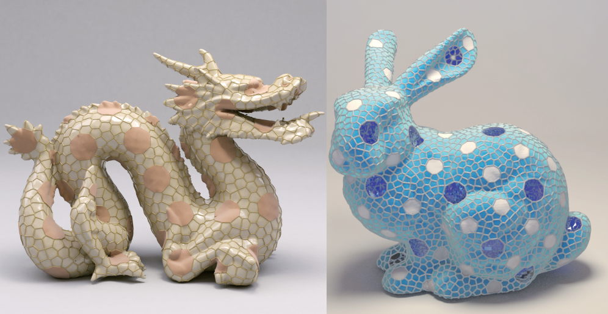
Capacity Constrained Blue-Noise Sampling on Surfaces
Sen Zhang, Jianwei Guo, Hui Zhang, Xiaohong Jia, Dong-ming Yan, Jun-Hai Yong, Peter Wonka
Computers & Graphics, 55, 44-54, 2016.
[pdf]
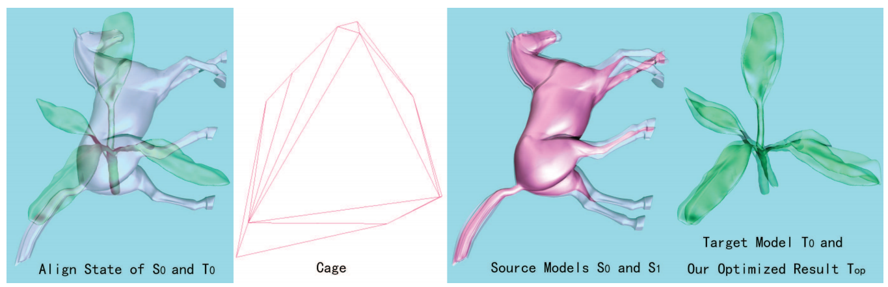
Shape exploration of 3D
heterogeneous models based on cages
Weiliang Meng, Jianwei Guo, Xavier Bonaventura, Mateu Sbert, Xiaopeng Zhang
Multimedia Tools and Applications, 1-22, 2016. [pdf]
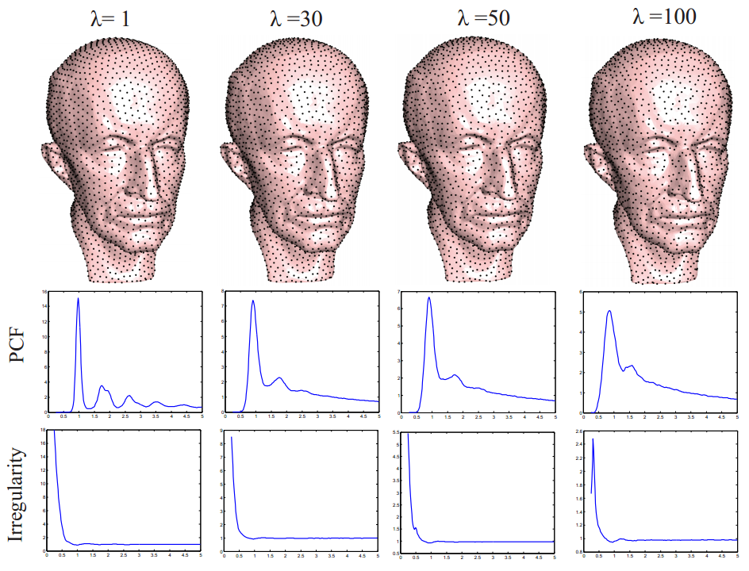
Analyzing surface sampling patterns using the localized pair correlation function
Weize Quan, Jianwei Guo, Dong-ming Yan, Weiliang Meng, Xiaopeng Zhang
Journal of Computational Visual Media, 2016.
[pdf]
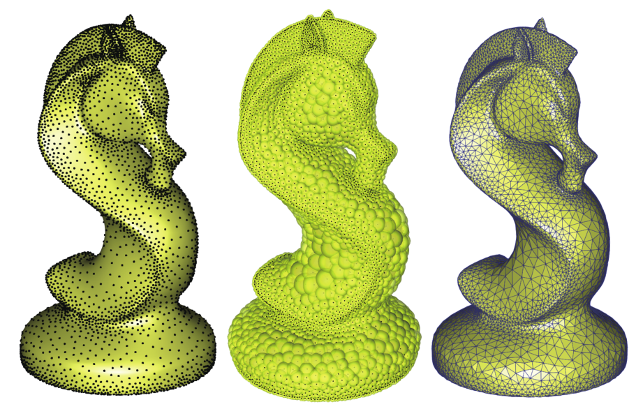
Efficient Maximal Poisson-disk Sampling and Remeshing on Surfaces
Jianwei Guo, Dong-ming Yan, Xiaohong Jia, Xiaopeng Zhang
Computers & Graphics (Proceedings of SMI),Volume 46, February 2015, Pages 72-79, won Honorable Mention Best Paper Award at SMI.
[pdf]
[Executables]
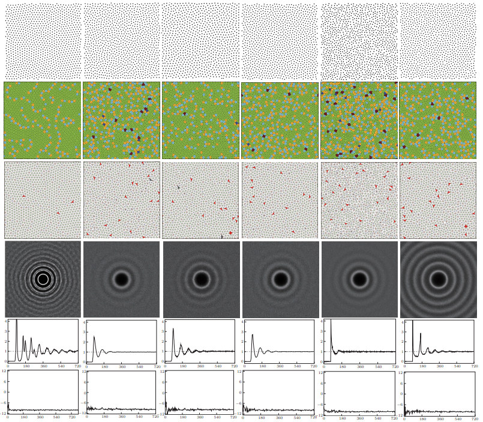
A Survey of Blue-Noise Sampling and Its Applications
Dong-ming Yan, Jianwei Guo, Bin Wang, Xiaopeng Zhang, Peter Wonka
Journal of Computer Science and Technology, V30(3): 439-452, 2015.
[pdf]
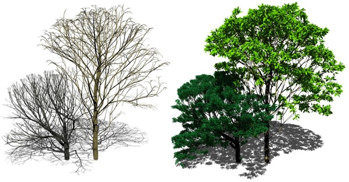
Light-Guided Tree Modeling of Diverse Biomorphs
Lei Yi, Hongjun Li, Jianwei Guo, Xiaopeng Zhang, Oliver Deussen
Pacific Graphics (Short Papers), 2015.
[pdf]
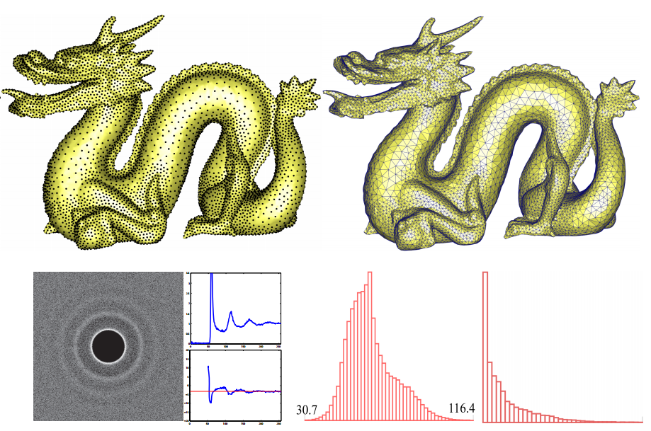
Blue-Noise Remeshing with Farthest Point Optimization
Dong-ming Yan, Jianwei Guo, Xiaohong Jia, Xiaopeng Zhang, Peter Wonka
Computer Graphics Forum (Proceedings of SGP), 33(5): 167-176, 2014.
[pdf],
[suppl],
[video]
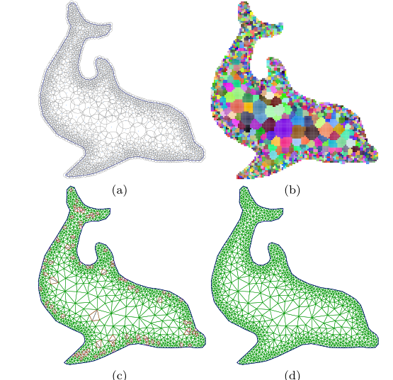
Efficient Triangulation of Poisson-disk Sampled Point Sets
Jianwei Guo, Dong-ming Yan, Guanbo Bao, Weiming Dong, Peter Wonka, Xiaopeng Zhang
The Visual Computer (Proceedings of CGI), 30(6-8): 773-785, 2014.
[pdf]
[code]
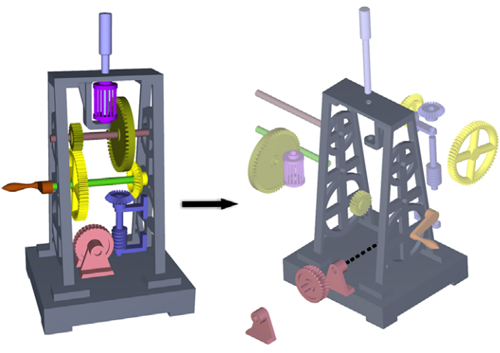
Illustrating the Disassembly of 3D Models
Jianwei Guo, Dong-ming Yan, Er Li, Weiming Dong, Peter Wonka, Xiaopeng Zhang
Computers & Graphics (Proceedings of SMI), 37(6), 574-581, 2013.
[pdf],
[video]
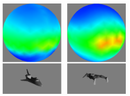
3D shape retrieval using viewpoint information-theoretic measures
Xavier Bonaventura, Jianwei Guo, Weiliang Meng, Miquel Feixas, Xiaopeng Zhang, Mateu Sbert
Computer Animation and Virtual Worlds, 2013.
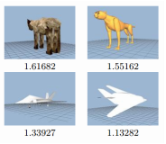
Viewpoint information-theoretic measures for 3D shape similarity
Xavier Bonaventura, Jianwei Guo, Weiliang Meng, Miquel Feixas, Xiaopeng Zhang, Mateu Sbert
Proceedings of the 12th ACM SIGGRAPH International Conference on Virtual-Reality Continuum and Its Applications in Industry (VRCAI '13), Pages 183-190, 2013.
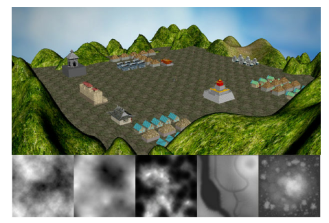
O3D-based game learning environments for cultural heritage online education
Lu Wang, Jian-Wei Guo, Cheng-Lei Yang, Hai-Seng Zhao, and Xiang-Xu Meng
Entertainment for Education, Lecture Notes in Computer Science (E-dutainment’10), Volume 6249, pp.417-428, 2010.